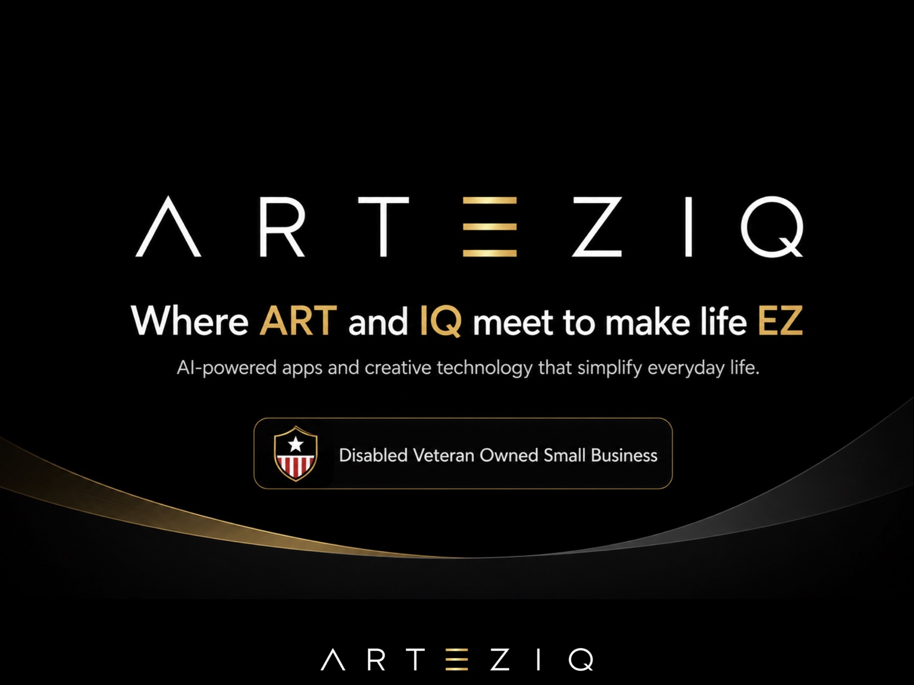
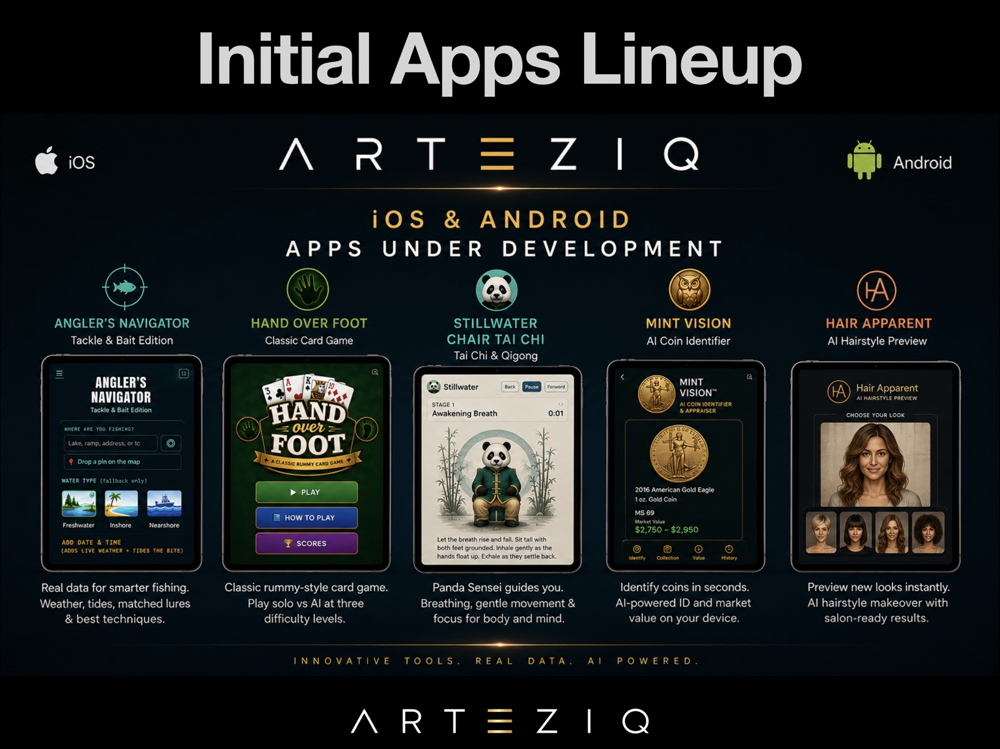
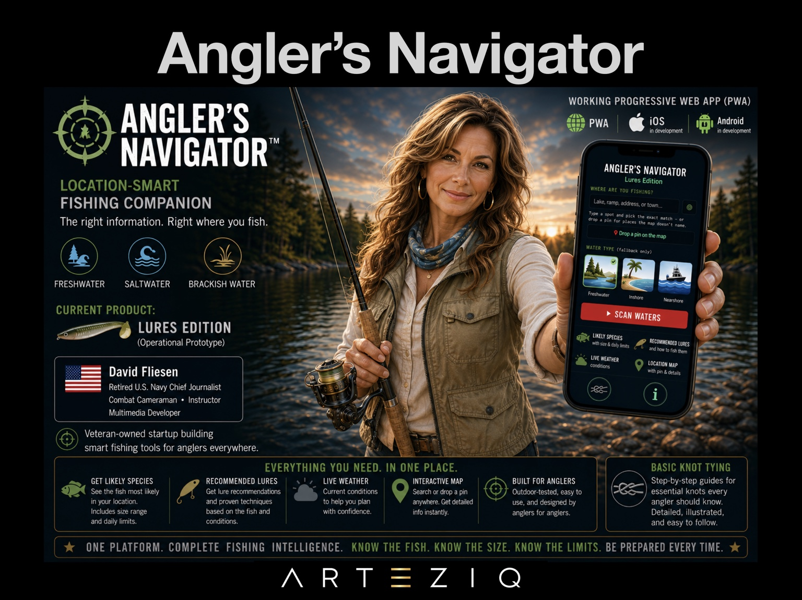

Useful first
Every product starts with a practical problem and a clear reason to exist.
AI-powered apps · Creative technology
ARTEZIQ builds useful, approachable technology that turns complex information into clearer everyday decisions, better experiences, and smarter tools.

What we build
ARTEZIQ combines design, artificial intelligence, real-world data, and thoughtful user experience to create tools people can understand and use immediately.
Every product starts with a practical problem and a clear reason to exist.
Technology should reduce friction, not add more complexity to a person’s day.
Recommendations use real sources, transparent inputs, and responsible AI.
Initial apps lineup
All products are currently under development for modern browsers, tablets, and mobile devices.
Enter where and when you are fishing to get weather, tides, likely species, matched Z-Man lures, and clear directions for fishing them.
A polished rummy-style card game inspired by Hand and Foot Canasta. Play solo against a built-in AI opponent on a green-felt table.
Sage the Panda Sensei guides breathing, Chair Tai Chi, and Qigong in a calm, focused experience built around gentle movement.
An AI-powered coin companion using computer vision for fast, on-device identification and current market valuation.
Preview haircut ideas on your own photo, then create a salon-ready stylist brief without sending your photos to an external server.


Featured product
A location-smart fishing companion that brings the information anglers normally chase across several sites into one focused experience.
Founder-led innovation
ARTEZIQ was founded by David Fliesen, a retired U.S. Navy Chief Journalist, combat cameraman, instructor, and multimedia developer. His work brings together visual storytelling, training, software concepts, and applied generative AI.
View David’s developer portfolio ↗The next useful idea
ARTEZIQ is developing a focused portfolio of AI-powered products designed to make everyday tasks clearer, easier, and more engaging.
Back to the top